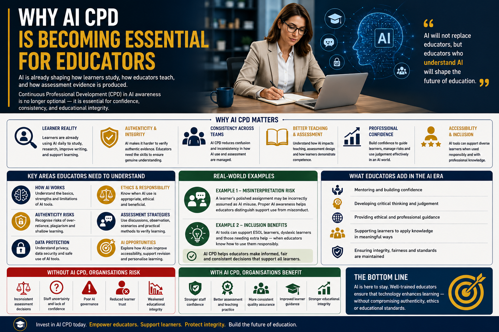

Artificial Intelligence is already shaping how learners study, how educators teach, and how assessment evidence is produced. AI awareness and Continuous Professional Development are no longer optional within modern education.

Artificial Intelligence is rapidly transforming education across schools, colleges, universities, and vocational training environments. Tools such as ChatGPT, Microsoft Copilot, and Gemini are increasingly influencing how learners study, how educators teach, and how assessment evidence is produced.
As a result, one important reality is becoming increasingly clear:
In many educational settings, learners are already using AI daily to generate ideas, improve written work, summarise information, revise content, explain difficult concepts, and support independent learning.
However, while learner adoption of AI continues growing rapidly, many educators are still trying to understand:
Without proper AI awareness training, organisations risk inconsistency and uncertainty across teams and departments.
For example, one assessor may encourage responsible AI use for revision and grammar support, while another may treat any AI involvement as academic misconduct.
Similarly, some educators may rely too heavily on unreliable AI detection software, while others may ignore authenticity concerns completely.
Generative AI systems can produce inaccurate information, fabricated references, biased outputs, and misleading explanations while presenting information confidently as fact.
Learners who rely too heavily on AI without critical thinking may therefore develop shallow understanding or unknowingly reproduce incorrect information.
Professional discussions, reflective learning, scenario-based questioning, and practical assessment methods are becoming increasingly important because they help educators verify genuine learner understanding rather than relying solely on written assignments.
AI CPD also plays a major role in safeguarding educational integrity.
Many educational providers are still developing policies regarding:
Educators therefore require training not only in how AI works, but also when AI use is appropriate, when it becomes problematic, and how to guide learners responsibly.
The future of education is unlikely to focus purely on delivering information because learners can already access information instantly through AI systems.
Instead, educators increasingly add value through:
However, educators who understand AI responsibly are increasingly likely to shape the future of modern education.
Artificial Intelligence is no longer a future issue within education. It is already shaping classrooms, assessments, quality assurance processes, and learner behaviour right now.
Technology will continue evolving rapidly, but well-trained educators remain essential for ensuring that learning stays authentic, ethical, inclusive, and professionally meaningful within increasingly AI-assisted educational environments.